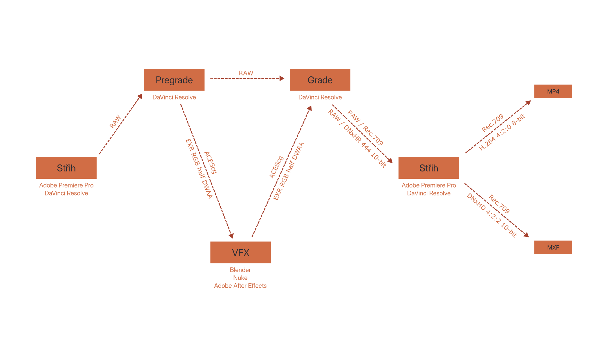
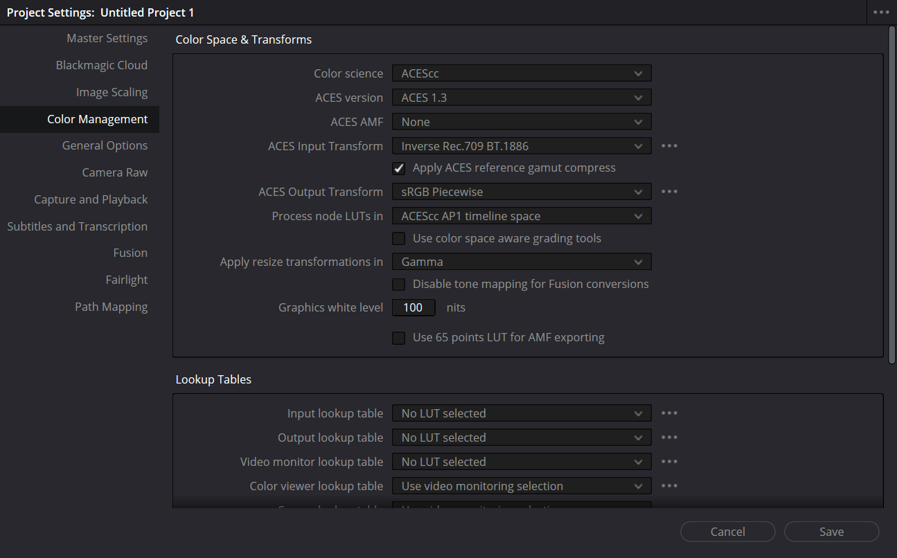
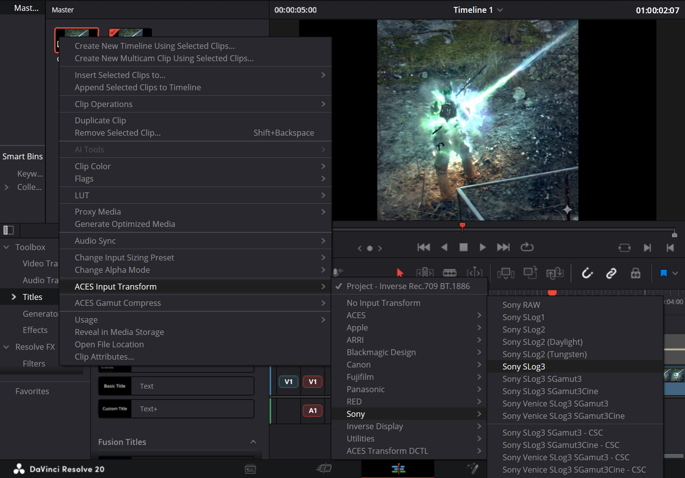
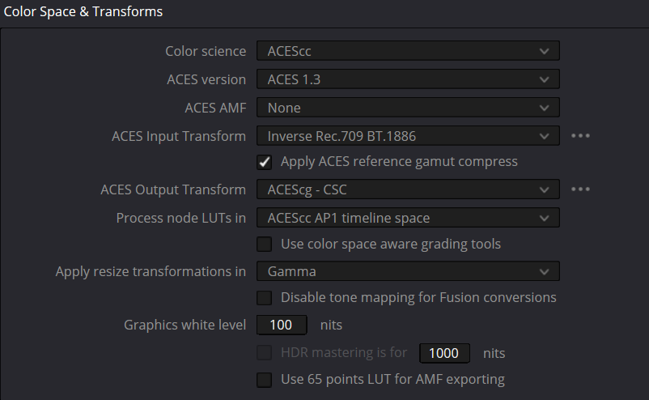
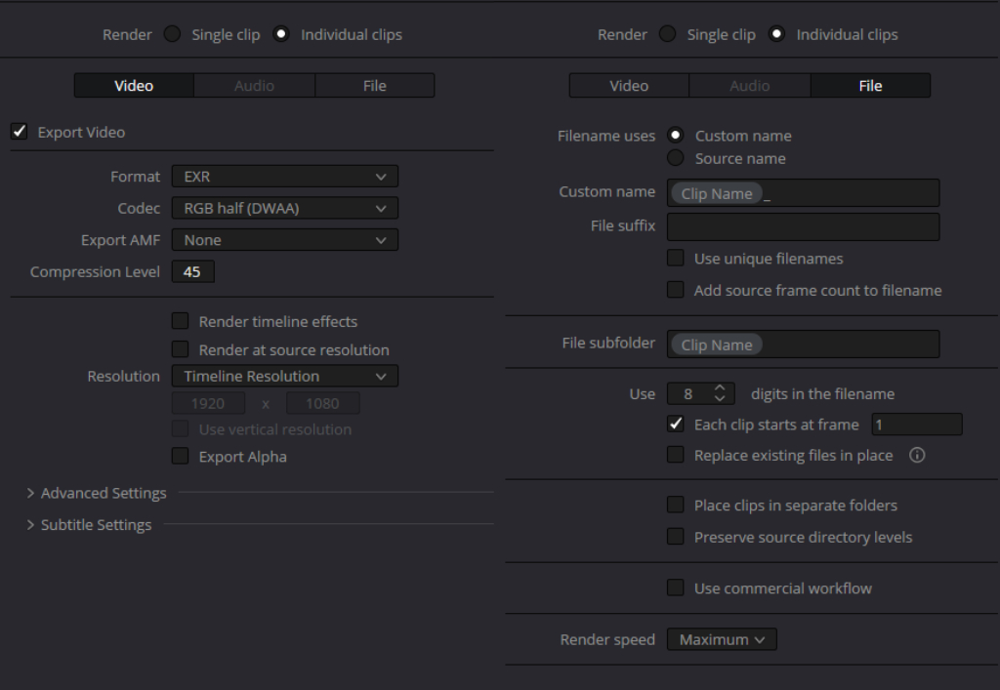
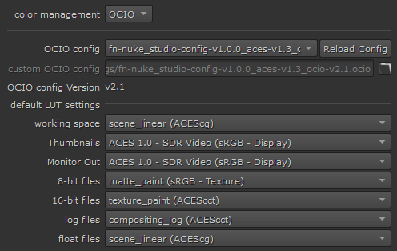
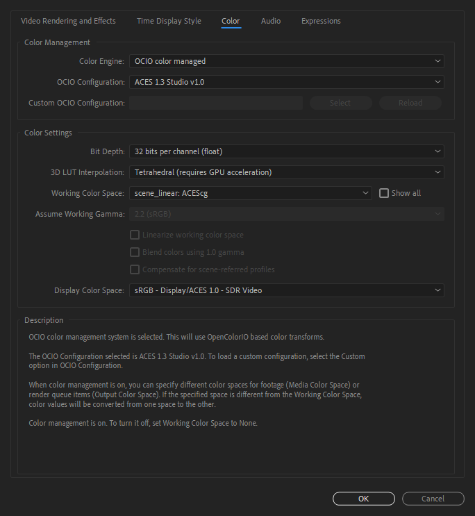
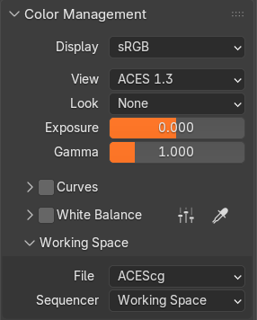
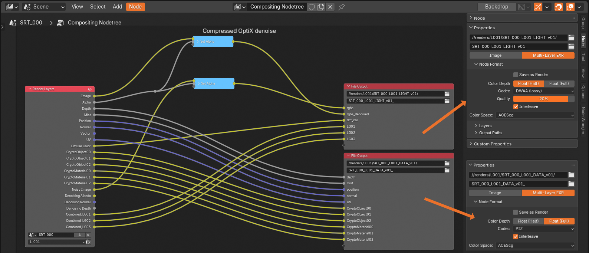
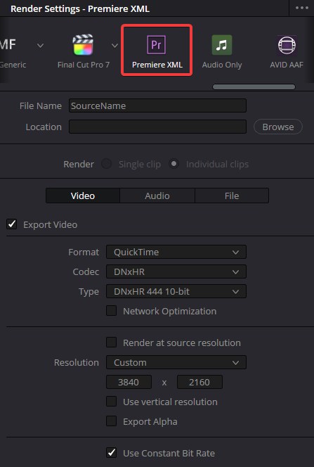

PDF verze ke stažení
Úvod
Tato stránka by měla sloužit jako příručka pro kohokoli, kdo řeší problém color managementu v omezených podmínkách. Píšu ji z pozice 3D generalisty, který potřebuje získat záběry ze střižny a odevzdat je tak, aby je colorista mohl barvit.
Vše vychází z mých praktických zkušeností a teoretických znalostí, které se postupně prohlubují. To znamená, že v budoucnu budou další verze, které by měly zohledňovat nové problémy, nebo rozšiřovat využití. Změny napříč verzemi jsou uvedeny v changelogu. V případě potřeby mě kontaktujte na mailu fili5h@protonmail.com
Hlavním problémem je převod RAW video formátů z profesionálních kamer do formátu použitelnějšího pro VFX postprodukci. Zároveň by mělo být možné zachovat jednotný obraz napříč programy. Pipeline by měla umožňovat zachování maximálního množství obrazových informací po co nejdelší dobu postprodukce při smysluplných objemech dat. Pro větší přístupnost ve většině dokumentu není vysvětlováno, proč jsou jednotlivé části pipeline navrženy konkrétním způsobem. Upřesnění, vysvětlení a poznámky jsou pak ve vlastní sekci na konci. Jedná se o adaptaci a navázání na mou bakalářskou práci, kde lze najít podrobnější vysvětlení a zdroje.
Pipeline má přirozeně své limitace, které jsou uvedeny na konci. Pokud se jim někdo chce věnovat, budu rád za sdílení poznatků.
Stručný přehled

- pipeline je postavená na ACES 1.3
- po lock cutu kameraman provede pregrade, ve kterém udělá úpravy závislé na RAW a případné razantní barevné změny
- záběry pro VFX se exportují jako EXR v ACEScg
- VFX pracuje v ACEScg a data tak také vrací do gradingu
- grade probíhá v ACEScc s Rec.709 / sRGB náhledovou LUTkou
- zpět do střižny se data vrací v DNxHR 444 10-bit v Rec.709 anebo jen Resolve projekt
Důležité poznámky
- náhledovou LUT nebo output transform je potřeba volit podle monitoru, který používáme
- pro televize (např. v gradingu) se zpravidla používá Rec.709
- většina PC monitorů používá sRGB
- Apple zařízení často používají P3
- v DaVinci Resolve není skutečná náhledová LUT, nastavuje se Output Transform
- pro náhledové a finální exporty je zásadní přepnout Output Transform na Rec.709
Střih
- pro offline střih není color management natolik zásadní, je ale vhodné ho v této fázi už nastavit
- ze střižny putují původní video soubory do gradingu na pregrade
DaVinci Resolve
- pro jednoduchou práci doporučuji používat color management celého projektu
- nastavení pro ACES (na PC monitoru) vypadají takto:

(DaVinci Resolve 20)
- poté se buď klipy automaticky načtou se správným input transform pomocí metadat, nebo je možné color space specifikovat manuálně:

(DaVinci Resolve 20)
- je vhodné pojmenovat klipy záběrů určených pro VFX, usnadňuje to práci s nimi
- takto nastavený projekt pak může být předán na pregrade - projekt je předáván mezi střihem a gradingem, není potřeba exportovat timeline
Premiere Pro
- pro RAW video soubory může být potřeba nainstalovat plugin
- při střihu je vhodné používat náhledovou LUT na převedení z color space kamery do color space monitoru
- tuto LUT je vhodné zapéct do proxies, než ji na nich potom používat
- pro export do gradingu je vhodná XML soupiska společně se zdrojovými soubory z kamery
Grafika
- grafika přichází do střižny v sRGB nebo Rec.709
- pokud je potřeba průhlednost, ProRes a DNxHR jsou vhodnými formáty
- je potřeba dodržet nastavení alphy (straight / premultiplied)
Pregrade
- po lock cutu je potřeba provést barevné úpravy, které využívají funkce RAW videa (ISO, WB, Gamut Compression), protože po tomto kroku už záběry pro VFX nebudou v RAW
- dále pak razantní grade, který by komplikoval práci VFX, by měl být proveden předtím - day for night
- natavení color managementu projektu zůstává stejné maximálně se změní output transform podle používaného monitoru:
(DaVinci Resolve 20)
- zde není cílem stylizace obrazu, jen barevná korekce, v podstatě vyvolání dat - zbytečný grade by mohl snižovat flexibilitu
Export pro VFX
- data pro VFX jsou v ACEScg colorspace, který se musí v Resolvu nastavit (Project settings):

(DaVinci Resolve 20)
- formát dat pro VFX je EXR RGB half s DWAA kompresí (Deliver page):
- vzhledem k tomu, že se jedná o EXR sekvenci, vyplatí se správně nastavit, kam se budou klipy exportovat a jak budou pojmenované

(DaVinci Resolve 20)
VFX
- kvůli množství používaných softwarů tato část je o něco více zjednodušená, ale o to více jsou uvedené věci zásadní
- data jsou předávaná v EXR sekvencích
- je nutné dodržet color management u svícení a compositingu
- Nuke i After Effects mají color management pomocí OCIO, takže lze použít ACES 1.3

(Nuke 17)

(After Effects 2026)
- Blender od verze 5.0 nativně podporuje renderování a náhled přes ACES

(Blender 5.1)
- pro nižší verze Blenderu existuje config PixelManager, který umožňuje používat ACES společně s AgX, dokonce nastavit working color space na ACEScg
- při exportu dat z 3D do compositingu můžeme rozlišovat light data a tech data
- light data jako beauty pass, light groups, případně všechny light passes je možné ukládat ztrátově do 16-bit DWAA (RGB half)
- tech data jako Cryptomatte, ZDepth a Position se musí ukládat bezztrátově do 32-bit PIZ (RGB float)
- jeden render jde tedy pro menší objem dat zapsat do dvou EXR sekvencí a ty pak v compositingu spojit

(Blender 5.1)
- gradingu putují data z VFX opět jako RGB half EXR sekvence s kodekem DWAA v ACEScg
Grade
- Resolve je nastavený stejně jako v pregradu:
(DaVinci Resolve 20)
- u většiny klipů, co nejsou v RAW, je potřeba specifikovat color space - pro VFX záběry ACEScg
- klipy s VFX by měly barevně sedět s RAW klipy a je možné mezi nimi kopírovat grade
- pokud probíhá střih v DaVinci Resolve, stačí si opět předat jen projekt
- pro Premiere jsou nabarvené záběry zpět do střižny exportovány společně s XML v Rec.709 ve formátu DNxHR 444 10-bit:

(DaVinci Resolve 20)
- je potřeba si ohlídat handles pro přechody mezi klipy
Online střih a export
- ve škole se filmy odevzdávají v Rec.709
- v DaVinci Resolve se používá projekt z gradingu, je potřeba nezapomenout přepnout Output Transform z color space monitoru do Rec.709
- v Premiere neřešíme color management, z gradingu přišly nabarvené klipy v Rec.709
- výrobní kniha v současné chvíli specifikuje dva soubory k odevzdání
- MP4
- obraz: H.264, 1080/25p, square pixels, 4:2:0, 8 bit, CBR 32 Mb/s
- zvuk: AAC, stereo 2.0, 48 kHz, 320 kb/s
- MXF
- obraz: DNxHD 185x MXF (184 Mbps), 1080/25p, square pixels, 4:2:2, 10 bit
- zvuk: WAV/PCM, uncompressed 2.0, 24 bit, 48 kHz (EBU R128, programme loudness, level: normalizace: -23 LUFS s tolerancí +- 1.0 LU)
Užitečné programy
- přehrávání EXR sekvencí - DJV
- čtení metadat - MediaInfo
- práce se soubory, hromadné přejmenování - Total Commander
- rychlejší, stabilnější, spolehlivější z hlediska barev videopřehrávač - MPV
Upřesnění
- ACES obecně je jako intermediate color space zvolen díky své univerzálnosti
- nedává smysl postavit pipeline na žádném color space od Blackmagicu, protože by mohl být problém s převodem dat z jiných kamer a programů, které ho nepodporují
- z tohoto důvodu není pro grade použit DaVinci Wide Gamut Intermediate
- ACES 1.3 je podporovaný napříč používanými programy, v budoucnu bude vhodné přejít na ACES 2.0 - nejsou kompatibilní
- když mluvíme o Rec.709 / sRGB LUTce, jde ideálně o ACES Rec.709 / sRBG ODT implementované v Resolvu, anebo v jiných programech pomocí OCIO
- Premiere 2025 přidala color management, ale není vhodný
- oproti After Effects není jasné, jestli používá OCIO a ACES
- není možné používat ACEScg EXR sekvence
- pregrade je nutné zlo, protože jsou situace, kdy je potřeba využít speciální funkce RAW videa, o které se konverzí pro VFX přijde
- často nemusí být ani potřeba, zpomaluje předání dat po lock cutu do VFX
- konverze z kamerového colorspace do ACEScc s náhledovou LUTkou nám poskytuje dobrý základ pro grade, který imituje reálný obraz na place bez ořezu gamutu
- Aces Input Transform v nastavení projektu je výchozí input transform, který se použije, když Resolve neví, co použít -> dává smysl případně nastavit na ACEScg / Rec.709 podle toho, jaká další data do střižny chodí
- Use color space aware grading tools znamená, že pro některé Resolve efekty (klíčování) se interně převede ACEScc do koukatelnějšího obrazu a zpět, aby správně fungovaly - nemělo by mít vliv na integritu dat
- PixelManager umožňuje nastavit working color space do ACEScg
- je to potřeba změnit v configu
- takto nastavený Blender není kompatibilní s normálním - rendery budou v compositingu vypadat jinak
- DWAA je ztrátová komprese pro EXR, která při výchozím nastavení na level 45 produkuje prakticky identický obraz s přibližně 6x menší velikostí souboru oproti nejefektivnější bezztrátové kompresi (PIZ)
- DWAB je varianta stejného algoritmu, která by měla být méně vhodná pro čtení v Nuku - netestováno
- jedná se o efektivnější kompresi, než je ve formátu DNxHR, který by jinak mohl být alternativou
- oproti BRAW jde ale o 6x větší datový tok, nicméně u některých filmů, kde se plýtvalo daty, by mohlo být výhodnější pro předávání dat do gradu celý lockcut vyexportovat jako tyto EXR sekvence
- export více EXR sekvencí je trochu bolestivý kvůli množství vzniklých souborů
- Resolve nejspíš nepodporuje vlastní číslování klipů při exportu, zde to lze obejít, že se v timeline pojmenují klipy ručně a pak se použije proměnná
%Clip Name v názvu souboru
- jinak existují nástroje pro hromadné přejmenování souborů (PowerToys, Total Commander)
- zpravidla není potřeba psát color space do názvu souboru, až na vyjímky
- video soubory určené ke sledování by měly být v Rec.709
- data z kamery často obsahují color space v metadatech, anebo je snadné ho zjistit
- EXR sekvence jsou určené pro lineární data
- obrázky jsou v sRGB
- většina klipů, co kameraman barví, je stále RAW, protože paradoxně jsou relativně malé
- v EXR jsou jen věci z VFX
- DNxHR 444 10-bit je mnohem lepší alternativa k RGB / YUV 422 Uncompressed, které se také používá pro cestu z Resolvu do Premiere Pro - neztrácí barvy a je menší
- EXR sekvence by byla ještě menší, ale nejde jí zvolit v Premiere XML presetu v Resolve a s video klipy se lépe pracuje
Limitace, prostor pro zlepšení
- tato verze je funkční, ale krátce po vydání došlo k několika změnám, kvůli kterým bude potřeba po otestování pipeline aktualizovat - nyní na to nemám čas
- ACES 2.0 je podporovaný napříč více programy
- DaVinci Resolve 21 přidalo možnost zvolit output transform na exportu, tím pádem prakticky podporuje náhledové ODT
- Nuke 17 color management s ACES 2.0 má jinak pojmenované color spaces
- v tuto chvíli pracujeme jen s Blackmagic RAW, ostatní RAW formáty nejsou otestované, princip zůstává stejný
- bylo by dobré coloristovi umožnit grading v DaVinci Wide Gamut
- v dalších verzích nelze vyloučit možnost generování náhledové LUTky po pregradu, ale pro day for night se asi zapečení gradu nevyhneme
- Resolve dovoluje zapsat do metadat údaje o color space, ale u EXR to nefungovalo, respektive Resolve pak nedetekoval správný color space
- DNxHR 444 10-bit je dost pravděpodobně zbytečně velký formát na přenos zpět do střižny vzhledem k technickým podmínkám finálního exportu
- je možné, že ořez do Rec.709 není vhodný pro případnou konverzi do DCP, ale škola očekává na konci DNxHD s Rec.709 obrazem
Changelog
- upřesnění prostoru ke zlepšení na základě skutečností, které vznikly po vydání verze 02.00